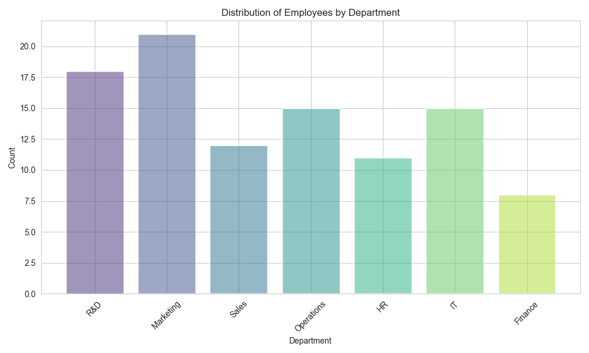

The following Python code was used to analyze the employee dataset and generate the visualization.
import pandas as pd
import matplotlib.pyplot as plt
import seaborn as sns
# Load the employee data
try:
df = pd.read_csv('data.csv')
print("Data loaded successfully.")
except FileNotFoundError:
print("Error: data.csv not found.")
exit()
# Calculate the frequency count for the "R&D" department
rd_count = df[df['department'] == 'R&D'].shape[0]
# Print the frequency count to the console
print(f"Frequency count for R&D department: {rd_count}")
# Create a histogram showing the distribution of departments
plt.figure(figsize=(10, 6))
sns.set_style("whitegrid")
sns.histplot(data=df, x='department', hue='department', shrink=0.8, palette='viridis', legend=False)
plt.title('Distribution of Employees by Department')
plt.xlabel('Department')
plt.ylabel('Count')
plt.xticks(rotation=45)
plt.tight_layout()
# Save the plot
plt.savefig('department_dist.png')
print("Visualization saved as department_dist.png")
The script calculated the frequency count for the "R&D" department:
The histogram below shows the distribution of employees across different departments.
